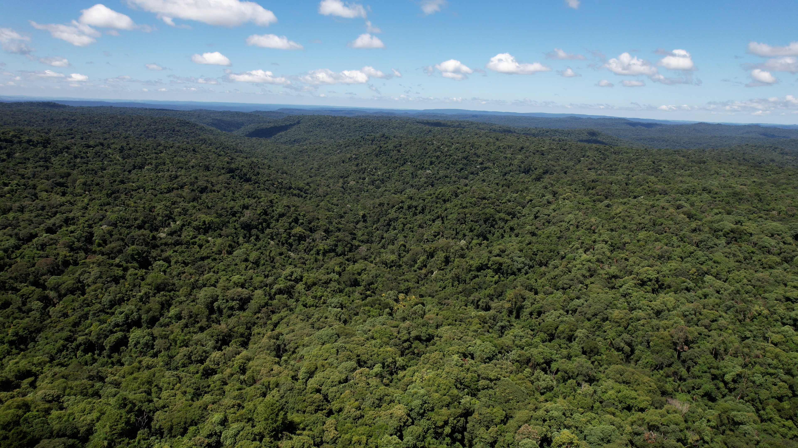
Provincia de Misiones · Argentina
Un territorio estratégico para la conservación de la biodiversidad
Misiones es una provincia del nordeste argentino que alberga uno de los ecosistemas de mayor biodiversidad del país: la Selva Paranaense, parte del Bosque Atlántico Sudamericano.
Misiones es una provincia del nordeste argentino que alberga uno de los ecosistemas de mayor biodiversidad del país: la Selva Paranaense, parte del Bosque Atlántico Sudamericano.
Misiones cuenta con 1.559.445 hectáreas de bosque nativo, que representan el 52 % de la superficie provincial. De ese total, 514.000 hectáreas se encuentran bajo protección —el 33 % del bosque nativo— mediante una red de 117 Áreas Naturales Protegidas que conforman uno de los principales sistemas de conservación ambiental de la provincia.
La protección se desarrolla en distintos niveles de gestión:
- una Reserva de Biosfera internacional, que abarca 236.313 ha;
- tres áreas nacionales con 67.400 ha;
- un Parque Federal de 5.131 ha;
- 43 áreas provinciales que comprenden 216.088 ha;
- 12 parques naturales municipales con 642 ha;
- 57 reservas privadas, que suman 31.391 ha.
Dentro del sistema provincial se encuentran:
- 22 Parques Provinciales
- 2 Monumentos Naturales
- 3 Reservas Naturales Culturales
- 9 Reservas de Usos Múltiples
- 5 Paisajes Protegidos
- 2 Reservas Ícticas
Este sistema integral de conservación permite resguardar una porción fundamental de la Selva Paranaense, uno de los ecosistemas de mayor riqueza biológica del país, que concentra el 52 % de la biodiversidad de Argentina.
A su vez, contribuye a proteger una extensa red hídrica integrada por 800 arroyos, 200 saltos y cascadas, 70 cuencas hidrográficas y cinco ríos, fundamentales para el equilibrio ambiental y la disponibilidad de agua en el territorio provincial.
Misiones en datos
La dimensión de lo que se conserva
- 0 de la biodiversidad de Argentina
- 0 de bosque nativo
- 0 de la superficie provincial es bosque nativo
- 0 de bosque nativo bajo protección
- 0 Áreas Naturales Protegidas
- 0 Parques Provinciales
- 0 arroyos
- 0 Reservas Naturales Privadas
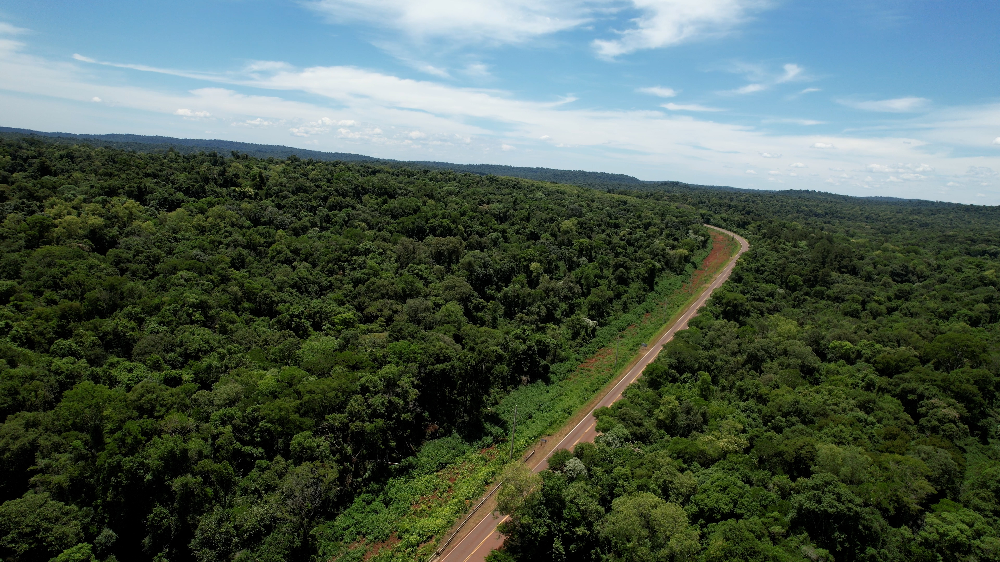
Selva Paranaense
El corazón verde de Misiones
La Selva Paranaense, también conocida como Selva Misionera o Bosque Atlántico, es uno de los ecosistemas de mayor riqueza biológica de Argentina y tiene en Misiones su núcleo mejor conservado. Se extiende por territorios de Argentina, Brasil y Paraguay y se caracteriza por un clima subtropical húmedo, con abundantes precipitaciones durante todo el año y una vegetación exuberante que se organiza en diferentes estratos, desde el sotobosque hasta un dosel formado por grandes árboles.
La provincia de Misiones concentra la totalidad del Bosque Atlántico presente en Argentina y alberga una extraordinaria diversidad de especies: más de 152 mamíferos, 574 aves, 355 peces de agua dulce, 116 reptiles y 68 anfibios, además de miles de especies de plantas y hongos. Entre sus especies emblemáticas se encuentran el yaguareté, el puma, el ocelote, el tapir, el mono carayá y distintas especies de tucanes y aves de selva.
La riqueza de este ecosistema también se refleja en su flora, con especies características como el lapacho, el palo rosa, la yerba mate y el pino Paraná, entre muchas otras. La Selva Paranaense cumple además un papel fundamental en la regulación del agua, la conservación de los suelos, la captura de carbono y el sostenimiento de una extensa red de ambientes naturales. Sin embargo, enfrenta amenazas como la fragmentación y pérdida del bosque, la deforestación, las actividades extractivas ilegales y la afectación de los recursos hídricos.
En este contexto, la conservación de la Selva Paranaense constituye una prioridad ambiental para Misiones. La provincia cuenta con una extensa red de áreas naturales protegidas y con el Corredor Verde, una estrategia destinada a mantener la conectividad entre los distintos fragmentos de selva y favorecer la conservación de especies y procesos ecológicos a escala provincial.
Biodiversidad
Una de las mayores riquezas naturales de la provincia
La diversidad de ambientes de Misiones permite la presencia de una gran cantidad de especies. Según el Instituto Misionero de Biodiversidad, Misiones alberga el 52 % de la biodiversidad de Argentina.
-
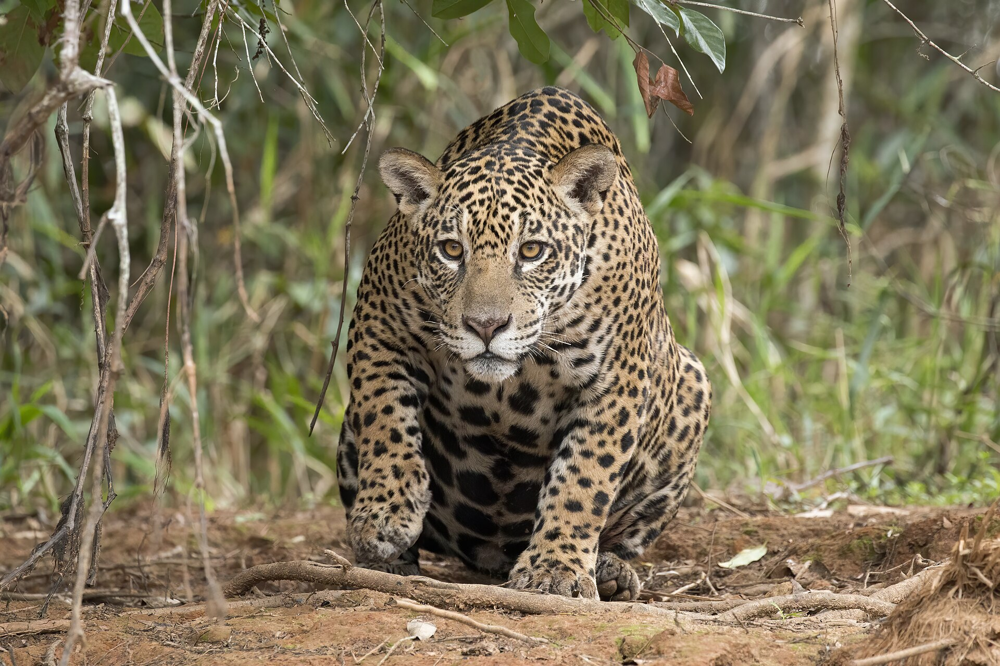
Yaguareté
Panthera onca
-
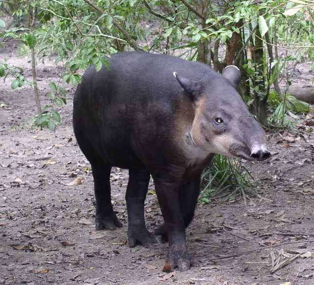
Tapir
Tapirus terrestris
-
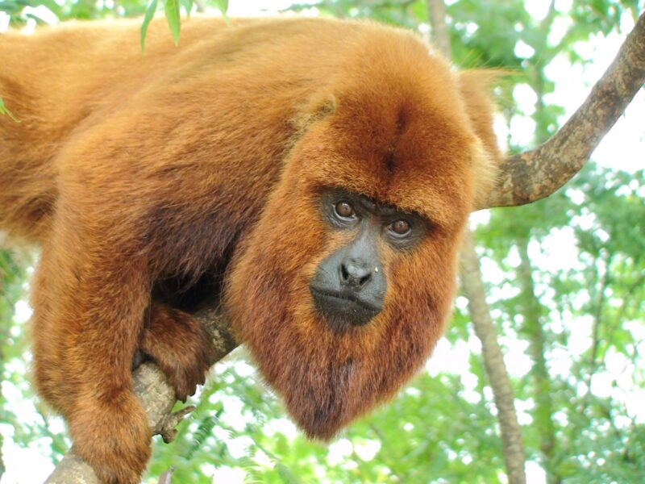
Mono carayá rojo
Alouatta guariba clamitans
-
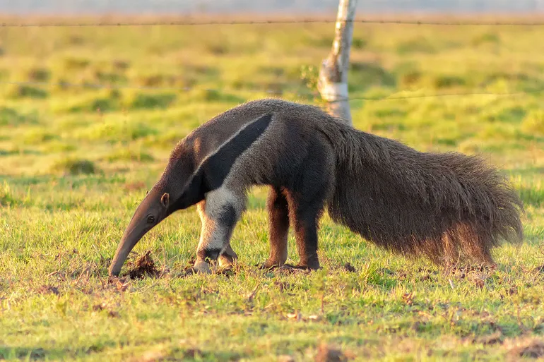
Oso hormiguero
Myrmecophaga tridactyla
-
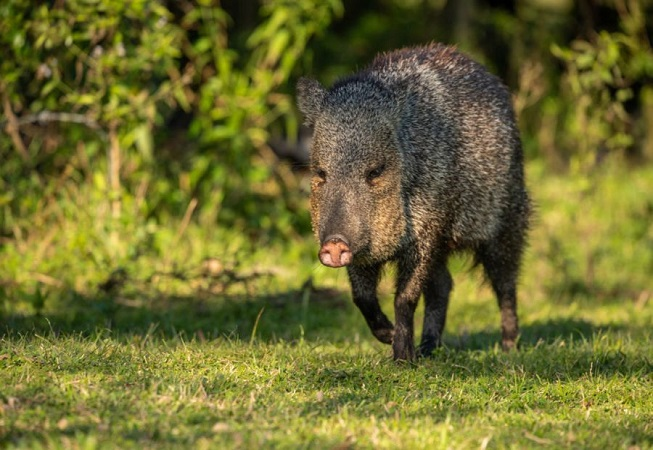
Pecarí de collar
Pecari tajacu
-
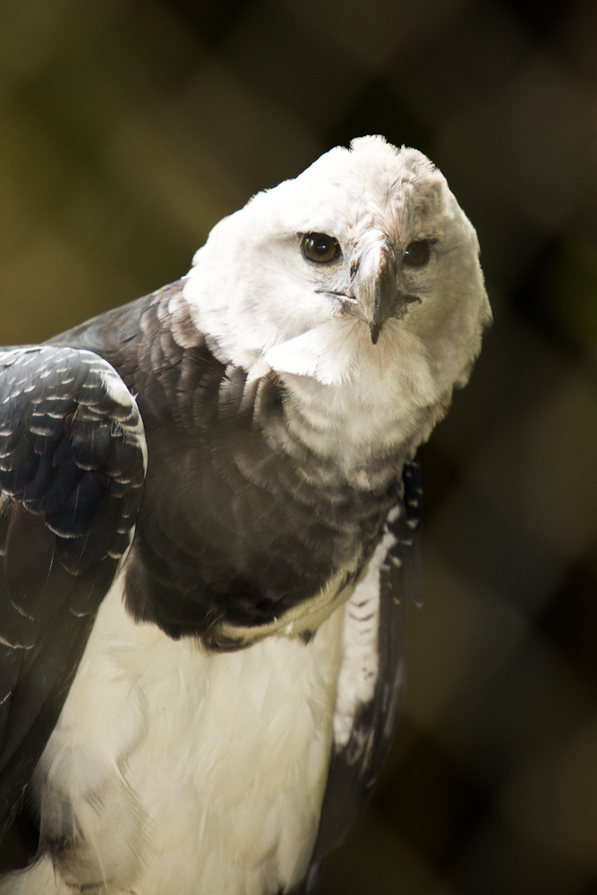
Águila harpía
Harpia harpyja
-
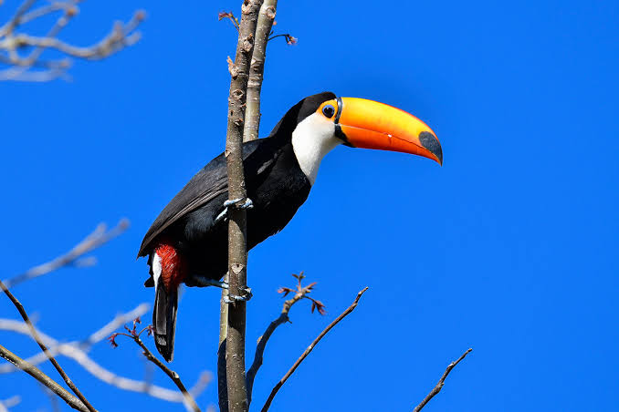
Tucán toco
Ramphastos toco
-
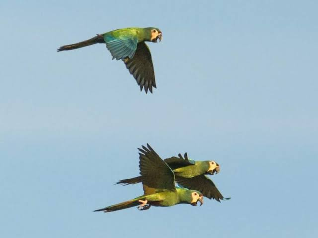
Maracaná
Primolius maracana
-
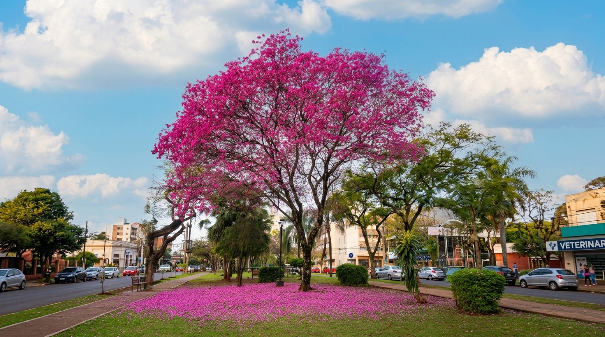
Lapacho negro
Handroanthus heptaphyllus
-
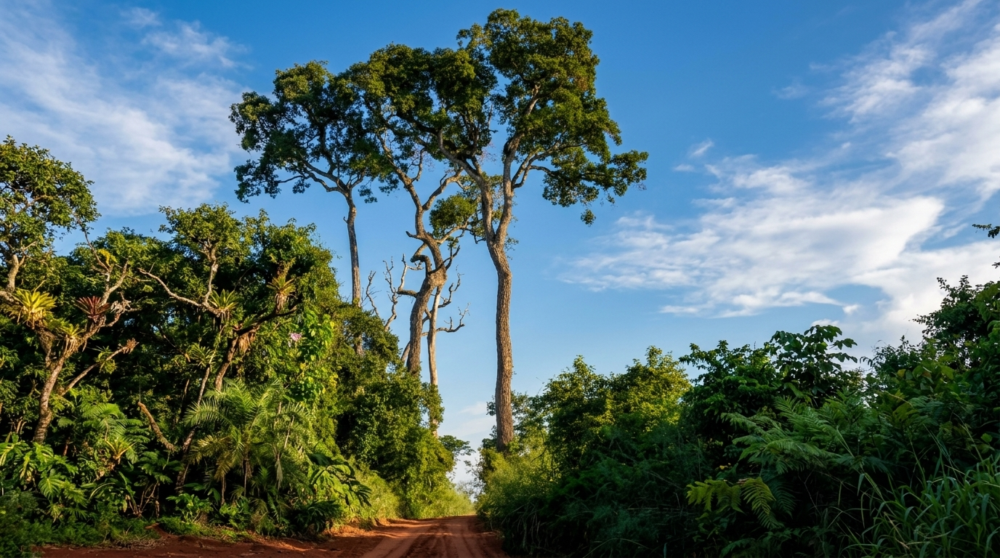
Palo rosa
Aspidosperma polyneuron
-
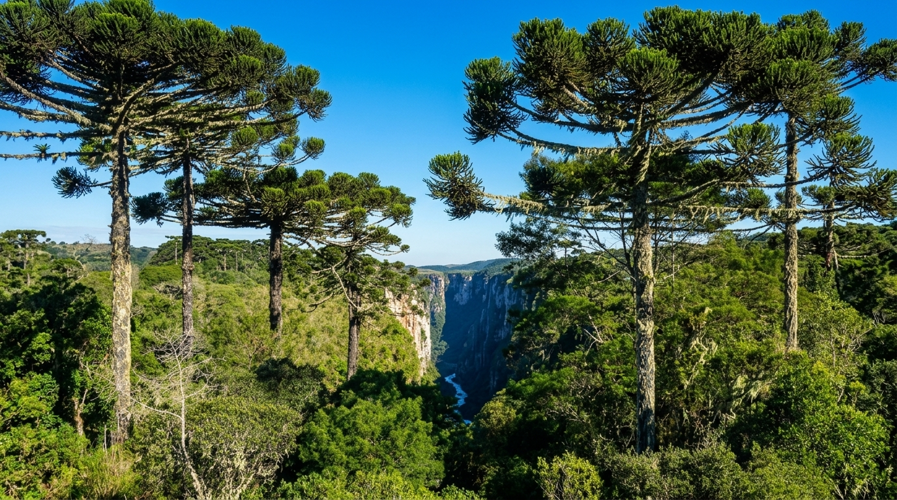
Araucaria misionera
Araucaria angustifolia
La conservación de esta biodiversidad requiere proteger los ambientes donde viven las especies y mantener la conexión entre ellos.
Ubicación
Misiones en el mapa
En el extremo nordeste de la Argentina, entre Brasil y Paraguay. Movés el mapa y hacés zoom para recorrer el territorio; para acercar con la rueda del mouse, primero hacé clic sobre el mapa.
Base cartográfica: OpenStreetMap.
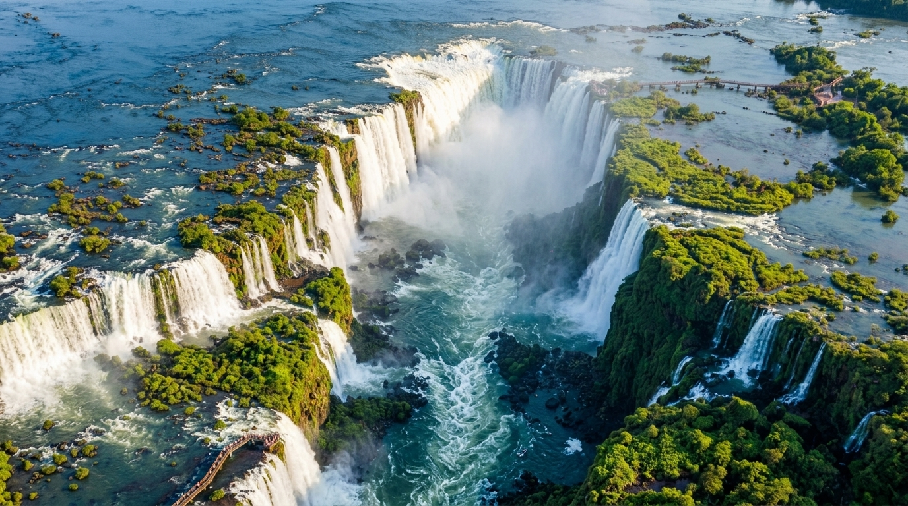
Cataratas del Iguazú
Una de las maravillas naturales del mundo
Ubicadas en el norte de la provincia de Misiones, sobre el río Iguazú y en la frontera con Brasil, las Cataratas del Iguazú constituyen uno de los principales patrimonios naturales de la región. El sistema está formado por numerosas caídas de agua distribuidas a lo largo de aproximadamente 2,7 kilómetros, con saltos que alcanzan cerca de 80 metros de altura. Entre ellos se destaca la Garganta del Diablo, el sector más imponente de las Cataratas.
Las Cataratas se encuentran protegidas dentro del Parque Nacional Iguazú, creado en 1934, que conserva más de 67.000 hectáreas de Selva Paranaense. Este ambiente alberga una extraordinaria diversidad de flora y fauna, con más de 2.000 especies de plantas y alrededor de 400 especies de aves, además de especies emblemáticas como el yaguareté, el tapir, el ocelote y el oso hormiguero. En conjunto con el Parque Nacional do Iguaçu, en Brasil, conforman uno de los mayores remanentes protegidos de la Selva Atlántica Interior.
Por su excepcional valor natural y paisajístico, el Parque Nacional Iguazú fue incorporado a la Lista del Patrimonio Mundial de la UNESCO en 1984. Las Cataratas también forman parte de las Siete Maravillas Naturales del Mundo. Su conservación representa no solo la protección de un paisaje único, sino también la preservación de uno de los ecosistemas de mayor biodiversidad de Misiones.
Video
Misiones en movimiento
Contenido audiovisual en preparación.
Misiones, naturaleza que trasciende fronteras
Proteger sus bosques, su biodiversidad y sus recursos naturales es una responsabilidad provincial, pero también un compromiso con la región y con las futuras generaciones.